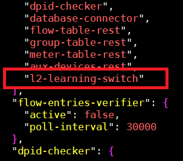
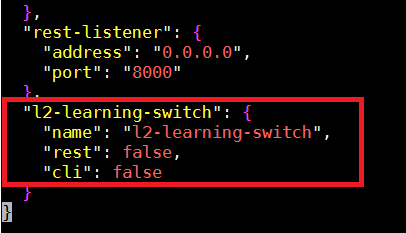
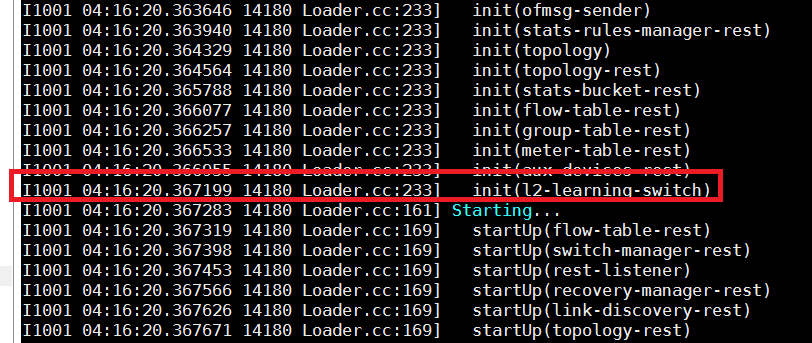
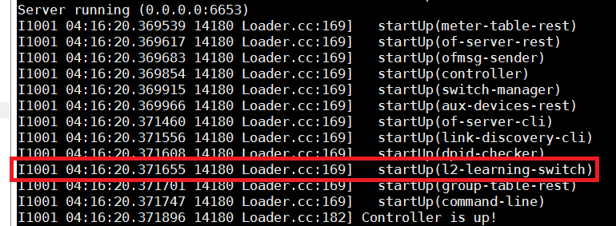

Tutorial 1: L2 Learning Switch¶
In this tutorial we create a simple L2 learning switch application for RUNOS Controller
1. Create Application Structure¶
1.1 Lets go to application sources folder:
cd /runos/src/apps
1.2 Create folder for L2 Learning switch application:
mkdir l2-learning-switch
cd l2-learning-switch
1.3 Create docs, include, src and folders:
mkdir docs
mkdir include
mkdir src
1.4 Create settings.json file for app:
touch settings.json
And add the following default settings for app:
{
"name": "l2-learning-switch",
"rest": false,
"cli": false
}
1.5 Create the following conanfile.py:
touch conanfile.py
1.6 Add the following code to conanfile.py file:
from conans import ConanFile, tools
class L2LearningSwitchConan(ConanFile):
name = "L2LearningSwitch"
version = "0.1"
settings = None
description = "L2 Learning Switch"
url = "None"
license = "None"
author = "None"
topics = None
def package(self):
self.copy("*")
def package_info(self):
self.cpp_info.libs = tools.collect_libs(self)
1.7 Add CMakeLists.txt file:
touch CMakeLists.txt
Add the following text:
target_sources(runos
PRIVATE
${CMAKE_CURRENT_SOURCE_DIR}/src/L2LearningSwitch.cc
${CMAKE_CURRENT_SOURCE_DIR}/include/L2LearningSwitch.hpp
)
1.8 Add README.md file:
touch README.md
1.9 Create L2LearningSwitch.hpp file:
cd include
touch L2LearningSwitch.hpp
cd ..
1.10 Create L2LearningSwitch.cc sources file:
cd src
touch L2LearningSwitch.cc
cd ..
2. Application Development¶
2.1 Add the following methods to L2LearningSwitch.hpp file:
#pragma once
#include "Application.hpp"
#include "Loader.hpp"
#include "SwitchManager.hpp"
#include "api/SwitchFwd.hpp"
#include "oxm/openflow_basic.hh"
#include <boost/optional.hpp>
#include <boost/thread.hpp>
#include <unordered_map>
namespace runos {
using SwitchPtr = safe::shared_ptr<Switch>;
namespace of13 = fluid_msg::of13;
namespace ofb {
constexpr auto in_port = oxm::in_port();
constexpr auto eth_src = oxm::eth_src();
constexpr auto eth_dst = oxm::eth_dst();
}
class L2LearningSwitch : public Application
{
Q_OBJECT
SIMPLE_APPLICATION(L2LearningSwitch, "l2-learning-switch")
public:
void init(Loader* loader, const Config& config) override;
protected slots:
void onSwitchUp(SwitchPtr sw);
private:
OFMessageHandlerPtr handler_;
SwitchManager* switch_manager_;
ethaddr src_mac_;
ethaddr dst_mac_;
uint64_t dpid_;
uint32_t in_port_;
void send_unicast(uint32_t target_switch_and_port, const of13::PacketIn& pi);
void send_broadcast(const of13::PacketIn& pi);
};
class HostsDatabase
{
public:
bool setPort(uint64_t dpid, ethaddr mac, uint32_t in_port);
boost::optional<uint32_t> getPort(uint64_t dpid, ethaddr mac);
private:
boost::shared_mutex mutex_;
std::unordered_map<uint64_t,
std::unordered_map<ethaddr, uint32_t>> seen_ports_;
};
} // namespace runos
2.2 Add the following code to L2LearningSwitch.cc file:
#include "L2LearningSwitch.hpp"
#include "PacketParser.hpp"
#include "api/Packet.hpp"
#include <runos/core/logging.hpp>
#include <sstream>
namespace runos {
REGISTER_APPLICATION(L2LearningSwitch, {"controller",
"switch-manager",
"topology",
""})
void L2LearningSwitch::init(Loader* loader, const Config& config)
{
switch_manager_ = SwitchManager::get(loader);
connect(switch_manager_, &SwitchManager::switchUp,
this, &L2LearningSwitch::onSwitchUp);
auto data_base = std::make_shared<HostsDatabase>();
/*
handler
*/
}
bool HostsDatabase::setPort(uint64_t dpid,
ethaddr mac,
uint32_t in_port)
{
if (is_broadcast(mac)) {
LOG(WARNING) << "Broadcast source address, dropping";
return false;
}
boost::unique_lock<boost::shared_mutex> lock(mutex_);
seen_ports_[dpid][mac] = in_port;
return true;
}
boost::optional<uint32_t> HostsDatabase::getPort(uint64_t dpid, ethaddr mac)
{
boost::shared_lock<boost::shared_mutex> lock(mutex_);
auto it = seen_ports_[dpid].find(mac);
if (it != seen_ports_[dpid].end()) {
return it->second;
} else {
return boost::none;
}
}
} // namespace runos
2.3 Add packet-in handler inside init-method:
handler_ = Controller::get(loader)->register_handler(
[=](of13::PacketIn& pi, OFConnectionPtr ofconn) mutable -> bool
{
PacketParser pp(pi);
runos::Packet& pkt(pp);
src_mac_ = pkt.load(ofb::eth_src);
dst_mac_ = pkt.load(ofb::eth_dst);
in_port_ = pkt.load(ofb::in_port);
dpid_ = ofconn->dpid();
if (not data_base->setPort(dpid_,
src_mac_,
in_port_)) {
return false;
}
auto target_port = data_base->getPort(dpid_, dst_mac_);
if (target_port != boost::none) {
send_unicast(*target_port, pi);
} else {
send_broadcast(pi);
}
return true;
}, -5);
2.4 Add onSwitchUp method inside L2LearningSwitch class in L2LearningSwitch.hpp:
void onSwitchUp(SwitchPtr sw);
2.5 Add onSwitchUp method imlementation, in which we forms flow-mod message:
void L2LearningSwitch::onSwitchUp(SwitchPtr sw)
{
of13::FlowMod fm;
fm.command(of13::OFPFC_ADD);
fm.table_id(0);
fm.priority(1);
of13::ApplyActions applyActions;
of13::OutputAction output_action(of13::OFPP_CONTROLLER, 0xFFFF);
applyActions.add_action(output_action);
fm.add_instruction(applyActions);
sw->connection()->send(fm);
}
2.6 Add send_unicast method inside L2LearningSwitch class in L2LearningSwitch.hpp:
void send_unicast(uint32_t target_switch_and_port, const of13::PacketIn& pi);
2.7 Add send_unicast method implementation that contains sending packet-out and flow-mod messages:
void L2LearningSwitch::send_unicast(uint32_t target_port,
const of13::PacketIn& pi)
{
{ // Send PacketOut.
of13::PacketOut po;
po.data(pi.data(), pi.data_len());
of13::OutputAction output_action(target_port, of13::OFPCML_NO_BUFFER);
po.add_action(output_action);
switch_manager_->switch_(dpid_)->connection()->send(po);
} // Send PacketOut.
{ // Create FlowMod.
of13::FlowMod fm;
fm.command(of13::OFPFC_ADD);
fm.table_id(0);
fm.priority(2);
std::stringstream ss;
fm.idle_timeout(uint64_t(60));
fm.hard_timeout(uint64_t(1800));
ss.str(std::string());
ss.clear();
ss << src_mac_;
fm.add_oxm_field(new of13::EthSrc{
fluid_msg::EthAddress(ss.str())});
ss.str(std::string());
ss.clear();
ss << dst_mac_;
fm.add_oxm_field(new of13::EthDst{
fluid_msg::EthAddress(ss.str())});
of13::ApplyActions applyActions;
of13::OutputAction output_action(target_port, of13::OFPCML_NO_BUFFER);
applyActions.add_action(output_action);
fm.add_instruction(applyActions);
switch_manager_->switch_(dpid_)->connection()->send(fm);
} // Create FlowMod.
}
2.8 Add send_broadcast method inside L2LearningSwitch class in L2LearningSwitch.hpp:
void send_broadcast(const of13::PacketIn& pi)
2.9 Add send_broadcast method implementation that contains sending packet-out message:
void L2LearningSwitch::send_broadcast(const of13::PacketIn& pi)
{
of13::PacketOut po;
po.data(pi.data(), pi.data_len());
po.in_port(in_port_);
of13::OutputAction output_action(of13::OFPP_ALL, of13::OFPCML_NO_BUFFER);
po.add_action(output_action);
switch_manager_->switch_(dpid_)->connection()->send(po);
}
2.10 Go to runos root directory and build L2 learning switch application:
nix-shell
cd build
cmake ..
make
cd ..
You can see l2-learning-switch record in runos-settings.json (l2-learning-switch record automatically add to file):
{kind=link}
And detailed L2 Learning switch settings in the end of runos-settings.json:
{kind=link}
2.11 Start controller with L2 learning switch application:
./build/runos
You can see l2-learning-switch application in init section
{kind=link}
and in startup section in the RUNOS log:
{kind=link}
3. Application Testing¶
3.1 Start mininet topology:
sudo mn --topo single,3 --switch ovsk,protocols=OpenFlow13 --controller remote,ip=127.0.0.1,port=6653
3.2 Ping hosts in Mininet:
h1 ping h2
h2 ping h3
h1 ping h3